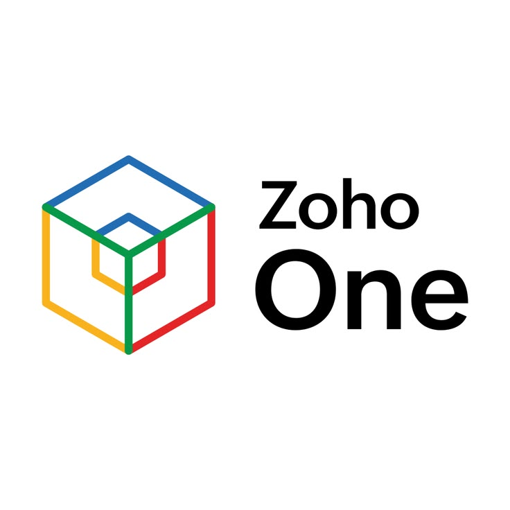
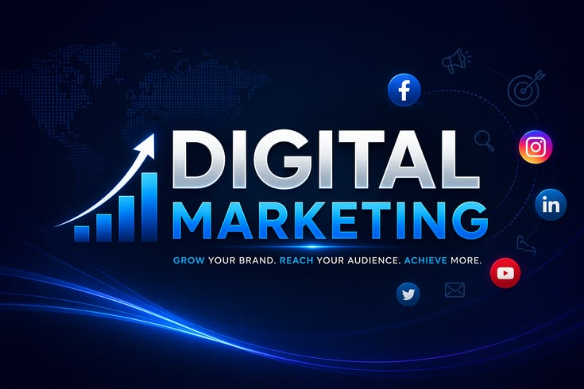

our story

history
Zoho Corporation is an Indian multinational technology company that makes cloud-based business software.[6] Its core products include workplace productivity and collaboration software, customer relationship management (CRM) software, and business management tools[7] .The company was founded in 1996 by Sridhar Vembu and Tony Thomas as AdventNet, Inc., in New Jersey.[8] Zoho is headquartered in Chennai, Tamil Nadu, India, and has offices in 80 countries, with its US headquarters located in Austin, Texas [9] .
As of 2023, it is privately owned,[10] with co-founders Tony Thomas and Sridhar Vembu holding 8% and 5% stakes, and Sridhar Vembu's sister Radha Vembu and brother Sekar Vembu owning 47.8% and 35.2% of the company, respectively [11][12] .
From 1996 to 2009, the company was known as AdventNet, Inc., founded in New Jersey, US, and initially provided a network management software called WebNMS [4][13].
AdventNet expanded operations into Japan in 2001 and shifted focus to small and medium businesses (SMBs).[13] In 2002, the company started its enterprise IT management software division known as ManageEngine [14] .
Zoho CRM was released in 2005, along with Zoho Writer, the company's first office suite product.[13] Zoho Projects, Creator, Sheet, and Show were released in 2006.[13] It expanded into the collaboration space with the release of Zoho Docs and Zoho Meeting in 2007. In 2008, the company added invoicing and mail applications.[15] In 2009, the company was renamed Zoho Corporation after its online office suite.[4] The company remains privately owned.[16]
In 2014, Zoho had its first annual user conference, called Zoholics, in India.[17][7] In 2017, Zoho launched Zoho One, a platform of over 40 integrated applications.[18] In 2020, it launched Zoho Workplace, a suite combining its existing productivity, collaboration, and communication software.[19]
In 2023, ERP software company Gofrugal, founded by Sridhar Vembu's brother Kumar Vembu, merged with Zoho.[20] In 2025, Zoho announced the launch of its large language model, Zia, for enterprise AI applications.[21]
Following a government tender won by Zoho in September 2023, all 1.2 million email accounts of Indian central government employees were migrated from the NIC-based system to Zoho Mail by 2025, while office productivity tools were shifted to the Zoho Workplace suite.[22][23]
In January 2025, co-founder Shailesh Kumar Davey succeeded Sridhar Vembu as group CEO, while Vembu transitioned to the role of chief scientist to focus on research and development.[24] In January 2026, Zoho launched Zoho ERP, an enterprise resource planning product developed at its Kumbakonam, Tamil Nadu office.[25] The same month, the company opened its first data centers in the United Arab Emirates, in Dubai and Abu Dhabi.[citation needed]
In 2026 Zoho Unveils Nathu La, a Designed-in-House Server, server motherboard and chassis platform in a Move Towards Technological Sovereignty and Inference Cost Reduction[26].
